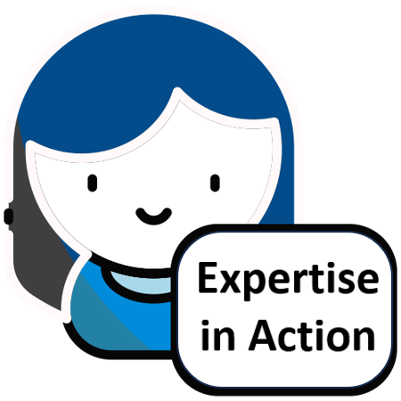

Project Name: Identifying Counterfeit Currency
Project Brief : The client wanted an e-learning module for bank tellers to confidently detect counterfeit Indian currency.

Conducting Need Analysis:
I began with a detailed needs analysis to understand the requirement in depth. This included discussions with the client’s service and operations teams to explore:
- Common errors tellers made in counterfeit detection
- Which denominations posed the greatest risk
- How much time tellers could realistically devote to learning
- Compliance requirements to RBI guidelines
- Policies/processes to align

Findings from the Needs Analysis:

- Instructional Design
- Gamification & Learning Strategy
- Graphics & Visual Mock-ups
- E-learning Development

Learning Design Strategy:
The module was designed as a game-based experience inspired by the “Money Heist” theme, where the storyline and mechanics were tightly interwoven with the learning content.
- The experience unfolded across four heist levels, each focusing on a different denomination.
- At the start of each level, learners explored the metallic printing plate and studied the denomination’s security features in depth.
- Once this learning phase was complete, the heist began — the currency went into production, the process was disrupted, and some notes were corrupted.
- Learners then faced a knowledge-check challenge, applying their skills to identify the counterfeit notes.
To bring this concept to life, I:
- Designed and created the design document, curating content mapped to learning objectives while minimizing cognitive load.
- Developed a detailed storyboard showing step-by-step progression of game elements, content flow, interactivities, and knowledge checks.
- Created visual mock-ups to align game mechanics with engaging design elements.
- Authored and published the complete module as SCORM-compliant packages for seamless deployment on the client’s LMS.

The Outcome
The client deeply appreciated the effort and attention to detail that went into the module. They especially valued the practical relevance, the clean design, and how easy it was for tellers to engage with the content and apply it on the job.
Click the video below to see a few glimpses from the project